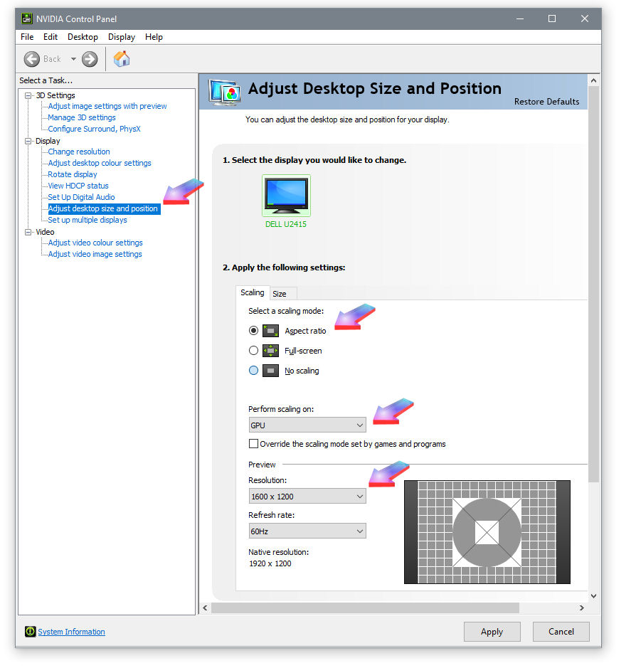
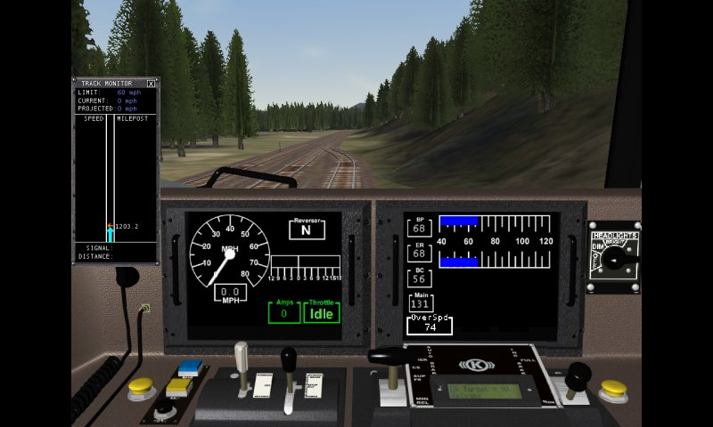

You can set screen resolutions on widescreen desk- and laptops with nVidia graphics cards using the nVidia Control Panel.
to eliminate distortion in MSTS by setting "scaling" or "aspect ratio".
This is an example using a recent (at time of this update - 02/2021) nVidia installation:
Right-click on the desktop, select "Graphics Properties", then "nVidia Control Panel".
Expand Display and click on Adjust desktop size and position.
Under Scaling,, click on Aspect Ratio radio button. (arrow).
Under Perform Scaling on, select GPU from the drop-down box (arrow):
From the Resolution drop-down box, select the largest vertical resolution that your monitor offers (here native resolution of 1920x1200 means that I selected 1600x1200).

This will give you the largest possible MSTS viewpoint with black bars down each side of the screen (much like a 4:3 TV programme on a wide-screen TV) - note you now DO NOT need the -vm:w parameter (see below):

Set the screen display in MSTS Options to the largest option available and save: MSTS will open with that resolution every time.
Command-line switches are useful if you have mini-routes that you want to run at a different resolution to your master MSTS as mini-routes take their initial resolution settings from the registry - UNLESS they are specified in the command line (for example, you're working on an activity in a mini-route and want to be sure AE opens in 16-bit to avoid "issues").